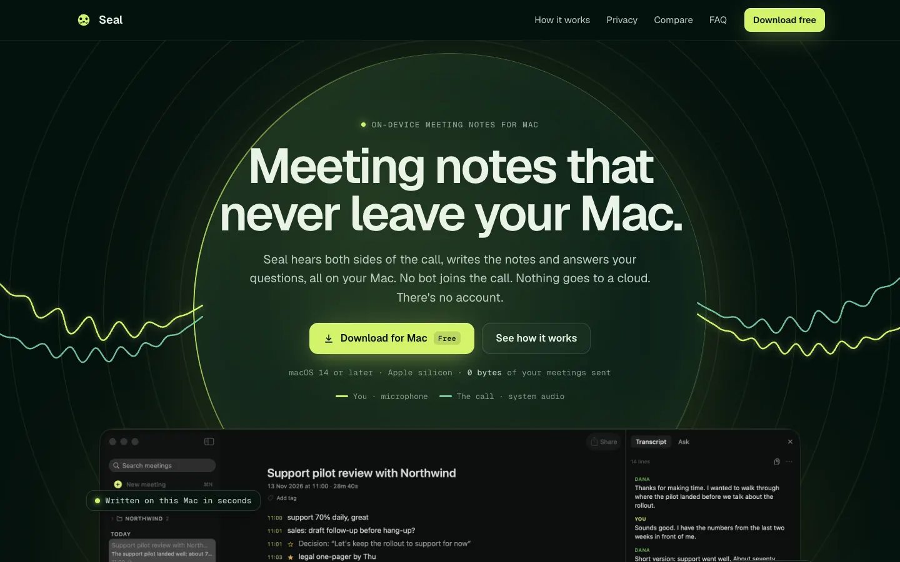
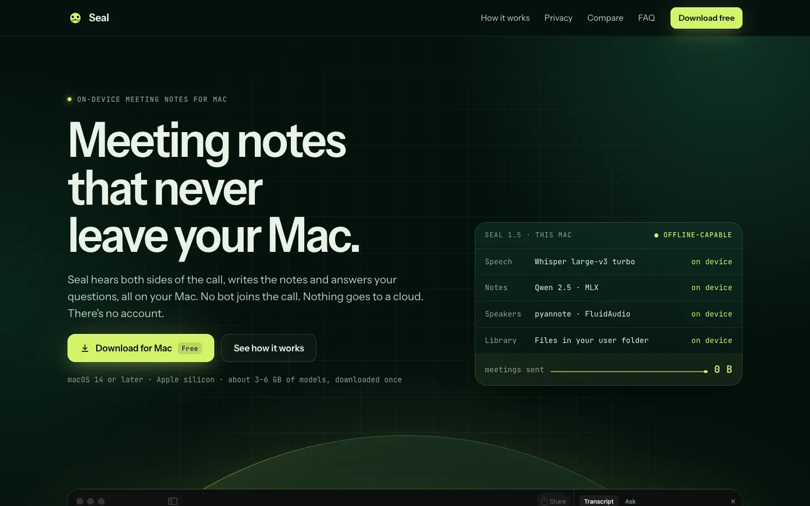
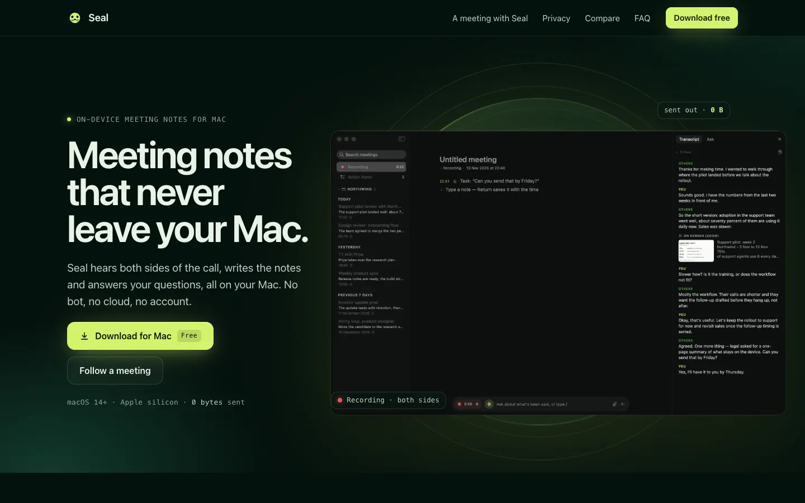

Three ways to build Sealed Glass
All three use the approved direction: night forest, lime as light, the glass seal, and real screenshots of Seal 1.5 taken from a made-up meeting. They differ in layout, type and the signature moment. Open each one and scroll to the end; motion plays as you scroll, once, then rests.

Halo
Centred and cinematic. The headline sits inside the seal, sound flows in from both sides, and the app rises out of it. Then one sticky stage follows a meeting from the call starting to the wax stamp.
- Feels like
- Apple keynote, Raycast
- Type
- Geist + Geist Mono
- Signature
- The seal behind the headline; the stamp pressing onto the finished notes

Console
Product-first and precise. A spec readout beside the headline says what runs where, the whole app rises out of the seal, features sit in a grid of real crops, and a Wi-Fi switch lets visitors test the privacy claim.
- Feels like
- Linear, a pro tool
- Type
- Instrument Sans + JetBrains Mono
- Signature
- “0 B sent” readout; the Wi-Fi-off test

Timeline
The approved sketch, made real. Then the page follows one meeting minute by minute down a rail that glows as you read: 10:59 the call starts, 11:28 you press Stop, 11:29 nothing has left the Mac.
- Feels like
- A story, told in real time
- Type
- The Mac's own SF Pro + SF Mono, no font download
- Signature
- The glowing timeline; “Sealed · 11:28”
What's shared
Colours, the glass seal, the waves, the wax stamp, the network list, comparison table, FAQ and the closing band with the pup. Whichever you pick, the other six pages get the same system.
What's not final yet
Copy is close to final but not polished. Links to the comparison and privacy pages point inside the prototype. The update-email form doesn't send.
How to answer
Pick one, or combine: for example "Timeline, with Halo's hero". Comments on anything you'd change are welcome.